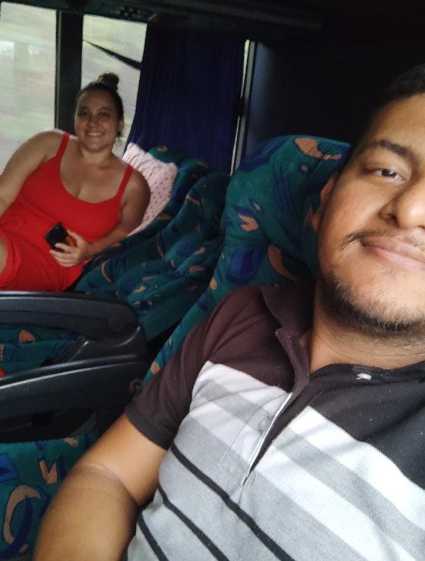
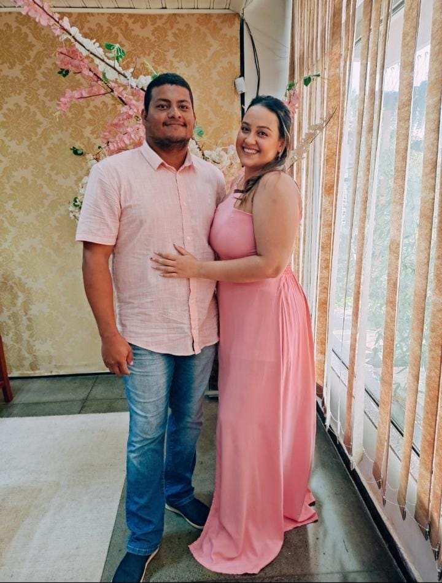

Uma pequena homenagem para o grande amor da minha vida...

Mais um ano novo juntos ‚Äî e eu s√≥ conseguia pensar em como quero todos os outros ao seu lado. üéÜ
Esperar por ele ao seu lado foi mágico... e te ver como mãe √© o maior presente. üë∂
Nosso Natal com amor e união. Com voc√™, minha fam√≠lia está completa. üéÑ
Esse sorriso ilumina os meus dias. Você é linda por dentro e por fora. ✨

Mesmo cansada, voc√™ √© luz. A mulher mais forte e dedicada que conhe√ßo. ‚ù§Ô∏è‚Äçü©π

Rimos, nos emocionamos... cada momento ao seu lado √© inesquec√≠vel. üé≠
Viajar contigo √© descobrir o mundo ‚Äî e me redescobrir no seu amor. üåç
O dia em que dissemos ‚Äúsim‚Äù ao amor, √† vida, e a n√≥s dois para sempre. üíç
Minha namorada, esposa e companheira...
Neste Dia dos Namorados, eu só quero te agradecer por ser esse amor tão forte, doce e verdadeiro.
Cada passo ao seu lado faz a vida valer a pena.
Que venham todos os dias — bons ou difíceis — contanto que eu esteja com você.
Te amo com tudo o que sou, hoje e para sempre. ❤️
Nosso casamento: 23/04/2022
Voltar ao In√≠cio üíñ